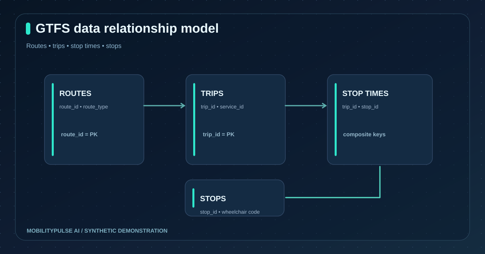
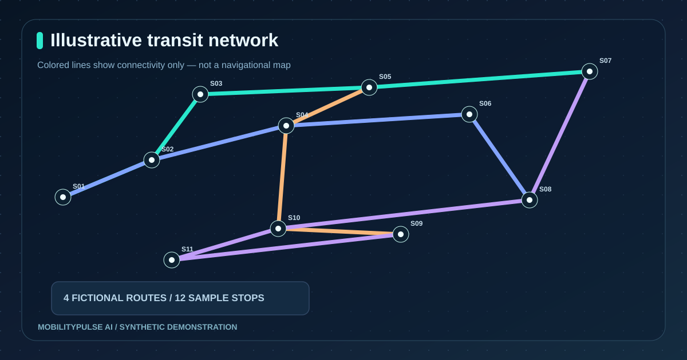
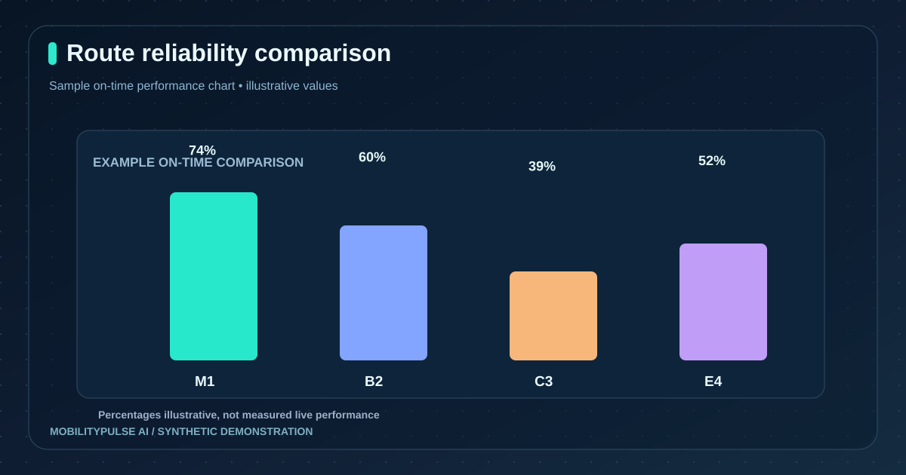
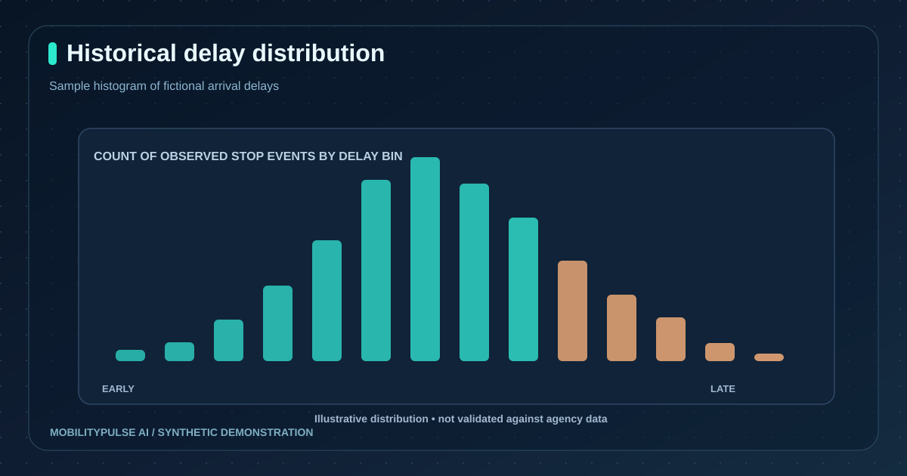

MobilityPulse AI
Public Transport Reliability & Accessibility Intelligence — GTFS ingestion, observed-event analytics and responsible AI experimentation.

Planned schedules are not actual arrivals.
Transit analysts need to know which metrics are grounded in actual observations. The project keeps schedules, actual timestamps, publisher prediction estimates and generated demonstrations distinct and preserves unknown accessibility status.
From GTFS to a tested web application.
Data engineering
Read and validate GTFS files, foreign keys and locations; compute observed arrival reliability and stop-level headways without converting schedule-only data into misleading punctuality metrics.
Frontend and model experiment
Build six React pages, source-aware API responses, optional GTFS-Realtime diagnostics and a RandomForest delay experiment with a date-based holdout and median baseline.
The repository's GitHub Actions checks have passed Python tests, React builds, Power BI CSV generation and a containerized API/frontend smoke test. These validate engineering behavior, not the correctness of real-world ETA predictions.
Ten original project graphics.
These drawings are project-created illustrations. Charts show synthetic or conceptual values, not live official agency readings.








Real-time operational use needs verified data.
Actual live passenger ETA and safety-critical use would require licensed authoritative feeds, monitored ETL, independently measured arrivals and performance metrics, privacy and accessibility reviews, persistent infrastructure and production security audits. No such certification is claimed.